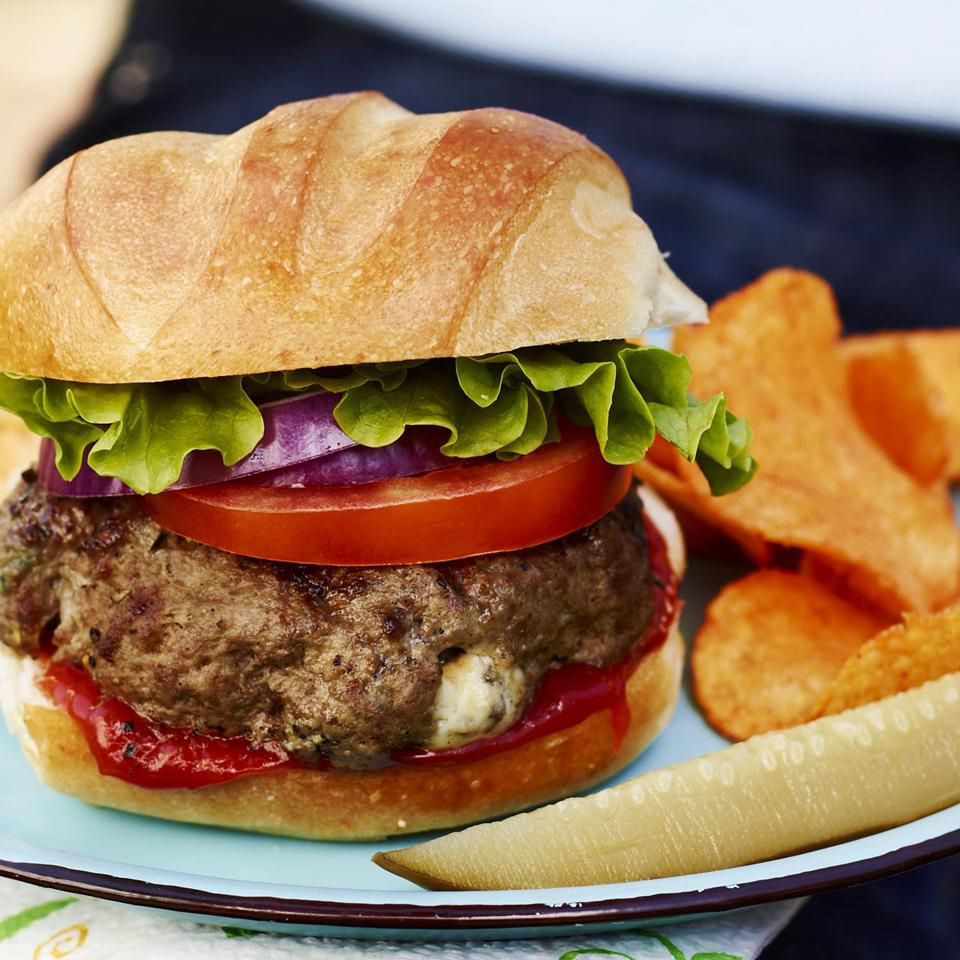

Burgers

Description
This recipe will teach you how you can make your favorite blue cheese burgers at home
Ingredients
- 3 pounds lean ground beef
- 1/2 cup minced fresh chives
- 4 ounces blue cheese, crumbled
- 1 1/2 teaspoons salt
- 1 teaspoon Worcestershire sauce
- 1 teaspoon coarsely ground black pepper
- 1 teaspoon dry mustard
- Buns
Steps
- Mix ground beef, chives, blue cheese, salt, Worcestershire sauce, pepper, mustard, and hot pepper sauce together in a large bowl until well combined. Cover and refrigerate for 2 hours.
- When ready to cook, preheat an outdoor grill for high heat and lightly oil the grate.
- Remove beef mixture from the refrigerator; form into patties.
- Cook patties on the preheated grill until an instant-read thermometer inserted into the center reads at least 160 degrees F (71 degrees C), about 5 minutes per side. Serve on hamburger buns.
As you can see it's pretty simple to make your own burgers from scratch, now you can sit back and enjoy!